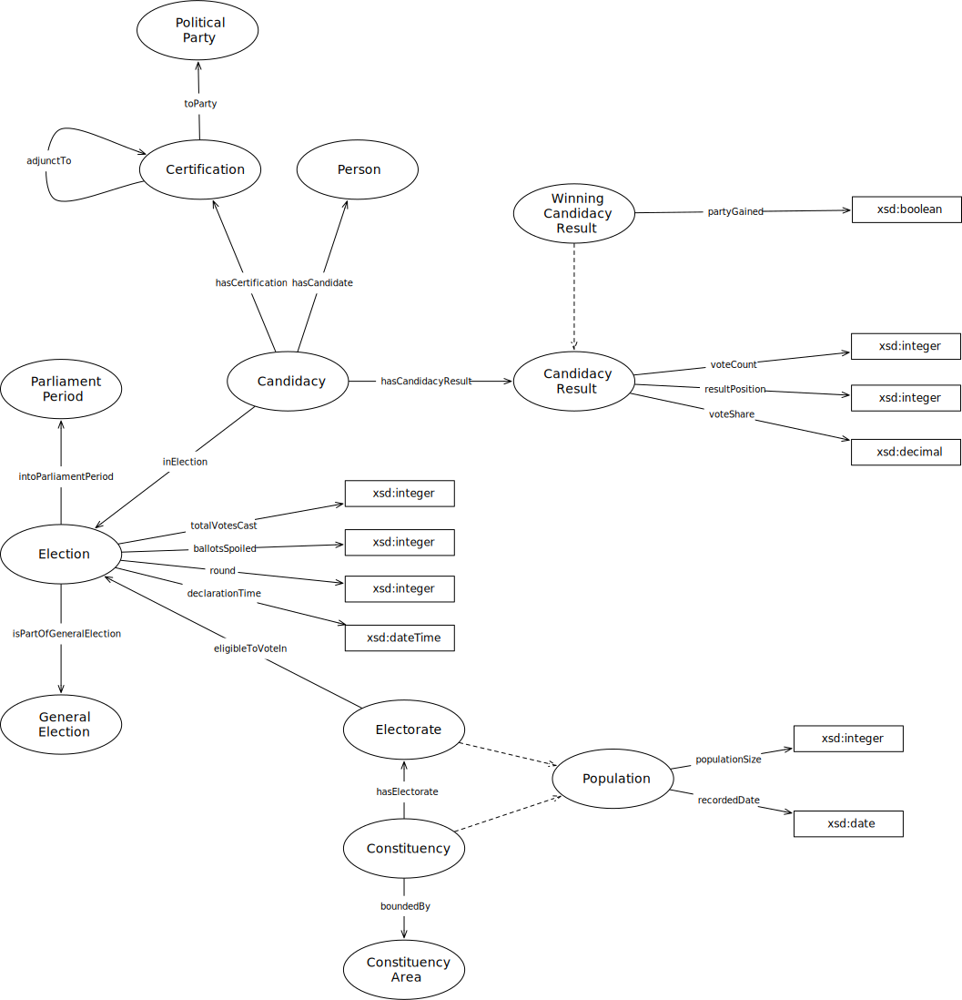

IRI: http://parliament.uk/ontologies/election/BoundarySet
IRI: http://parliament.uk/ontologies/election/Candidacy
IRI: http://parliament.uk/ontologies/election/CandidacyResult
IRI: http://parliament.uk/ontologies/election/Certification
IRI: http://parliament.uk/ontologies/election/ConstituencyArea
IRI: http://parliament.uk/ontologies/election/ConstituencyGroup
IRI: http://parliament.uk/ontologies/election/ConstituencyGroupSet
IRI: http://parliament.uk/ontologies/election/Country
IRI: http://parliament.uk/ontologies/election/Election
IRI: http://parliament.uk/ontologies/election/Electorate
IRI: http://parliament.uk/ontologies/election/GeneralElection
IRI: http://parliament.uk/ontologies/election/GeneralElectionInBoundarySet
IRI: http://parliament.uk/ontologies/election/ParliamentPeriod
IRI: http://parliament.uk/ontologies/election/Person
IRI: http://parliament.uk/ontologies/election/PoliticalParty
IRI: http://parliament.uk/ontologies/election/PoliticalPartyRegistration
IRI: http://parliament.uk/ontologies/election/StatutoryThing
IRI: http://parliament.uk/ontologies/election/WinningCandidacyResult
IRI: http://parliament.uk/ontologies/election/adjunctTo
IRI: http://parliament.uk/ontologies/election/boundedBy
IRI: http://parliament.uk/ontologies/election/certificationOf
IRI: http://parliament.uk/ontologies/election/constituencyGroupSetInCountry
IRI: http://parliament.uk/ontologies/election/definedIn
IRI: http://parliament.uk/ontologies/election/establishedBy
IRI: http://parliament.uk/ontologies/election/forConstituencyGroup
IRI: http://parliament.uk/ontologies/election/forGeneralElection
IRI: http://parliament.uk/ontologies/election/forParliamentPeriod
IRI: http://parliament.uk/ontologies/election/formsPartOfGeneralElection
IRI: http://parliament.uk/ontologies/election/hasCandidacyResult
IRI: http://parliament.uk/ontologies/election/hasCandidate
IRI: http://parliament.uk/ontologies/election/hasElectorate
IRI: http://parliament.uk/ontologies/election/inBoundarySet
IRI: http://parliament.uk/ontologies/election/inElection
IRI: http://parliament.uk/ontologies/election/includedIn
IRI: http://parliament.uk/ontologies/election/intoParliamentPeriod
IRI: http://parliament.uk/ontologies/election/issuedBy
IRI: http://parliament.uk/ontologies/election/registrationIn
IRI: http://parliament.uk/ontologies/election/registrationOf
IRI: http://parliament.uk/ontologies/election/asCommonsSpeaker
IRI: http://parliament.uk/ontologies/election/asIndependent
IRI: http://parliament.uk/ontologies/election/candidateFamilyName
IRI: http://parliament.uk/ontologies/election/candidateGivenName
IRI: http://parliament.uk/ontologies/election/declarationTime
IRI: http://parliament.uk/ontologies/election/electionPollingOn
IRI: http://parliament.uk/ontologies/election/generalElectionPollingOn
IRI: http://parliament.uk/ontologies/election/invalidVoteCount
IRI: http://parliament.uk/ontologies/election/isNotional
IRI: http://parliament.uk/ontologies/election/majority
IRI: http://parliament.uk/ontologies/election/ordinality
IRI: http://parliament.uk/ontologies/election/recordedDate
IRI: http://parliament.uk/ontologies/election/recordedSize
IRI: http://parliament.uk/ontologies/election/registeredPrimaryNameLastUpdatedOn
IRI: http://parliament.uk/ontologies/election/registrationID
IRI: http://parliament.uk/ontologies/election/resultPosition
IRI: http://parliament.uk/ontologies/election/resultSummary
IRI: http://parliament.uk/ontologies/election/round
IRI: http://parliament.uk/ontologies/election/validVoteCount
IRI: http://parliament.uk/ontologies/election/voteChange
IRI: http://parliament.uk/ontologies/election/voteCount
IRI: http://parliament.uk/ontologies/election/voteShare
This HTML document was obtained by processing the OWL ontology source code through LODE, Live OWL Documentation Environment, developed by Silvio Peroni.